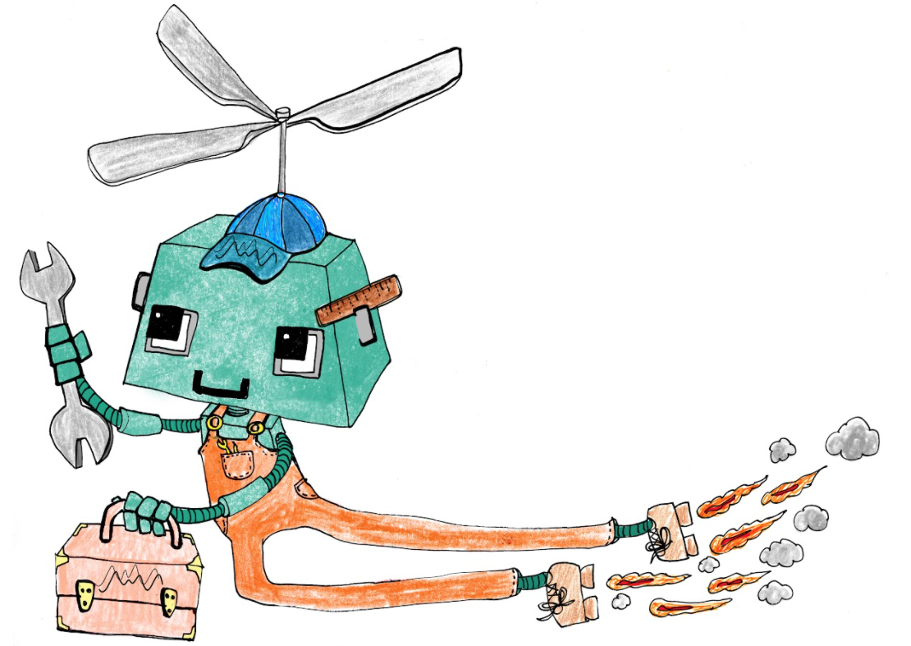
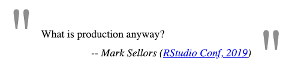

2021-08-27
This is a guest post by Colin Gillespie from Jumping Rivers, a Full Service RStudio Partner.
Earlier this month, Jack Walton and I delivered a webinar with RStudio on the benefits of putting R into production environments, and how to do it successfully. We received tons of questions from participants, ranging from package management, to team organization, and container best practices. Below is a summary of our answers to your questions.
At Jumping Rivers we use a combination of tools. For distributing and installing R packages, we use RStudio Package Manager (RSPM), in addition to the R package drat.
drat R package is a handy little package that makes creating R repositories easy. Since drat is an R package, we have complete flexibility with customization. For example, we have an internal workflow that dynamically creates repositories based on a Git branch name. Dynamically creating repos allows us to work on a separate development stream efficiently. Our primary use case for dynamic repos is when a Shiny app depends on several internal packages.In terms of package versioning, we tackle this in multiple ways.
renv. While this solves (some) reproducibility problems, it can cause other issues. We’ve recently taken on maintaining a few Shiny applications for clients. The Shiny application had been pinned to R v3.5 and the associated packages for that R release. This pinning causes upgrade issues and potential security issues (Javascript!).Finally, for our training material, the notes are always built with a current version of R and the current version of CRAN. When we run a course, participants are likely to use the latest versions of these packages. This can cause issues when the notes fail to build. But it’s better that the CI pipeline complains than course participants!
Pragmatically, the person in charge is the person paying the bill! While R is free, nothing is “free” for large organisations. Everything takes time and resources.
Typically, IT does the bulk of the work. That is, installing, upgrading, and maintaining R/RStudio. But Data Scientists, as the end-users, should have input into what they want. Communication is the key. When we work with organisations, we often provide that translation layer. We convert DS requirements into IT deliverables.
I’m making a hard distinction between IT and DS, but I acknowledge that this isn’t clear-cut in many organisations. But my overall feeling is that many DS teams don’t (typically) do well maintaining, patching and upgrading systems. They are too busy building models, reports and dashboards!

That’s an excellent question, and I suspect I would be a rich man if I knew the answer! There isn’t any evidence to suggest R is less secure than other standard environments. When we work with an organisation, we always start with a scoping project. This exercise assesses the organisations’ needs and, more importantly, provides different options with associated costs.
For example, take the question: how much does it cost to deploy an RStudio IDE across an organisation?
Each point has different implications and different costs. But the organisation needs to be in the position to make a choice.
Yes! See this list of companies, as well as this list of RStudio customers.
I feel your pain! One of our regular roles for clients is to take over and maintain workflows. Typically, this means using Docker to ensure that an existing pipeline doesn’t break.
However, we also have our eye on the future. Five years is starting to get painful in terms of R maintenance. From the beginning, we’ll actively plan an upgrade strategy. This plan is always centred around continuous integration and unit testing. Once this is in place, we have the nascent framework of an upgrade pathway.
The infrastructure we provide for an organisation is always carefully chosen to suit an organisation’s particular needs and use-cases. As such, we have experience deploying R solutions to several different production environments, including Azure-based environments.
Azure Machine Learning is, as the name suggests, first-and-foremost a platform for building machine learning pipelines, rather than a more general content hosting platform (as RStudio Connect is). Azure Machine learning supports several “drag-and-drop” no-code workflows (in addition to code-first workflows), making it an inclusive development platform for team members with low-code backgrounds.
We have also helped organisations migrate R pipelines onto the Databricks platform. Databricks makes it easy to scale R jobs across spark clusters which are created and scaled on demand. Both Azure and AWS support Databricks deployments, making it simpler to assimilate this tool into existing cloud-based environments.
While R is free, nothing is “free” for large organisations. Everything takes time and resources.
- Colin Gillespie, Jumping Rivers
The two technologies are a bit tricky to compare. RStudio Connect takes the pain out of application deployment. With a single click (or CI process), applications magically appear on a server. The user doesn’t need to worry about servers, containers or deployment.
Containers/Kubernetes are something that the average user doesn’t need to know about. They’re lurking in the background, ready to provide aid deployment or scale-up resources as needed. You can use containers to deploy Shiny applications, but that has to be combined with other technologies.